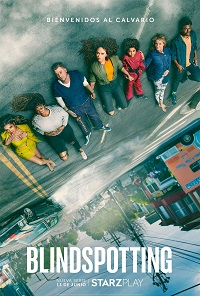
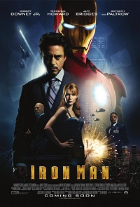
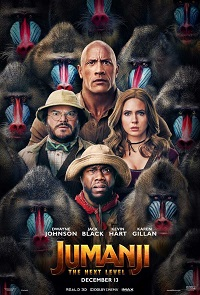

Series
-
Gangs of London
Tras el asesinato del capo de la organización, el repentino vacío de poder que crea su muerte rompe con la frágil paz que rige la complicada red de bandas que dominan las calles de Londres.

-
MotherFatherSon
Max posee uno de los imperios mediáticos más influyentes del mundo. Su negocio es la información: conoce los secretos más oscuros y usa su poder sin piedad, incluso contra su propia familia.

-
The Stand
The Stand es la visión de Stephen King de un mundo diezmado por una plaga y embarcado en una lucha elemental entre el bien y el mal. El destino de la humanidad está en las frágiles manos de la madre Abagail, de 108 años, y de un puñado de supervivientes.

Películas
-
Blindspotting
Blindspotting se sitúa en Oakland, donde vive la protagonista Ashley hasta que su novio y padre de su hijo es encarcelado y ella tiene que enfrentarse a una crisis existencial.
 -
Iron Man
Capturado en Oriente Medio por un grupo de insurgentes, el industrial Tony Stark (Robert Downey Jr.) utilizará su ingenio para crear una armadura que le permita escapar.
 -
Jumanji
El misterioso y letal juego Jumanji reaparece más de veinte años después. Es la época actual, y cuatro adolescentes se introducen en esta nueva aventura, ahora a partir de un videojuego que sirve como un portal a través del espacio-tiempo.
